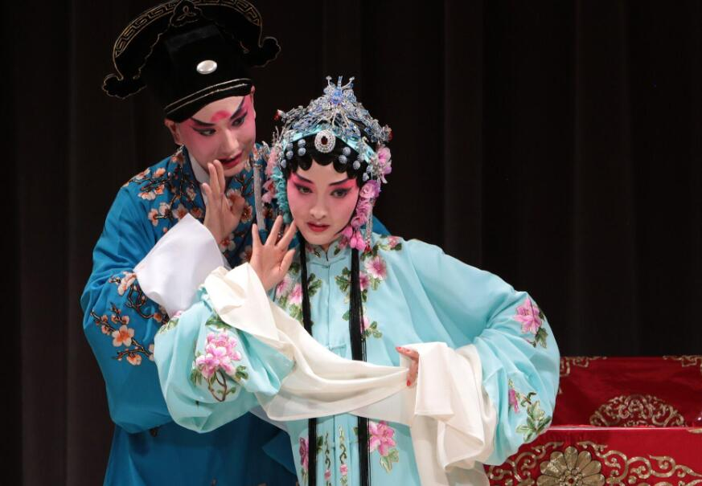

昆曲

昆曲（Kun Opera），原名“昆山腔”（简称“昆腔”），是中国古老的戏曲声腔、剧种，现又被称为“昆剧”。昆曲是汉族传统戏曲中最古老的剧种之一，也是中国汉族传统文化艺术，特别是戏曲艺术中的珍品，被称为百花园中的一朵“兰花”。昆曲发源于14世纪中国的苏州昆山，后经魏良辅等人的改良而走向全国，自明代中叶以来独领中国剧坛近300年。
昆曲糅合了唱念做打、舞蹈及武术等，以曲词典雅、行腔婉转、表演细腻著称，是被誉为“百戏之祖”的南戏系统下之一的曲种。昆曲以鼓、板控制演唱节奏，以曲笛、三弦等为主要伴奏乐器，其唱念语音为“中州韵”。
昆曲在2001年被联合国教科文组织列为“人类口述和非物质遗产代表作”。2006年列入第一批国家级非物质文化遗产名录。 [1] 2018年12月，教育部办公厅关于公布北京大学为昆曲中华优秀传统文化传承基地。
2019年10月2日，在2019中国戏曲文化周上，昆剧参与其中。